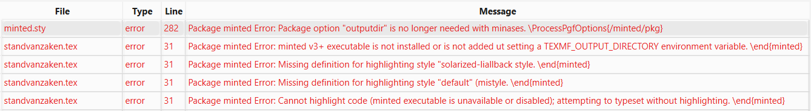
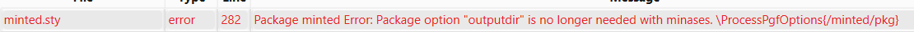

minted
De package minted laat toe om codefragmenten op te maken met syntaxkleuren zoals die in een code-editor of IDE getoond worden. Het resultaat ziet er een stuk beter uit dan de klassieke lstlisting-omgeving, die eerder ontworpen is voor het afdrukken van een document op papier en in zwart-wit.
Het nadeel van minted is wel dat het iets meer moeite vraagt om het te installeren, want het maakt gebruik van de Python-package pygments. Deze moet je dus eerst installeren.
Installatie
Als je nog geen Python-omgeving hebt, installeer dit dan eerst. Vervolgens moet je nog Pip-packages pygments en latexminted installeren. Zorg er voor dat je LaTeX-editor of IDE niet geopend is tijdens deze stappen, anders kan het zijn dat de packages niet gevonden worden.
> winget install -e --id Python.Python
> pip install pygments latexminted
Als je de instructies voor de installatie van TeXlive gevolgd hebt, dan is ook de Python-package voor minted geïnstalleerd.
Als je bij de compilatie van een LaTeX-document een fout krijgt die lijkt op latexminted: command not found, dan installeer je die nog via pip: pip install latexminted.
Gebruik
Om minted te gebruiken, moet je de package laden in de preamble van je document. In het voorbeeld hieronder zorgt de optie chapter er voor dat de nummering van de codefragmenten per hoofdstuk gebeurt.
\usepackage[chapter]{minted}
In het sjabloon voor de bachelorproef is hier al code voor voorzien.
Let op! Als je MikTeX op Windows gebruikt, moet je lijn 21 (zoals het voorbeeld hierboven) uit commentaar halen en lijn 24 (waar ook de optie outputdir=../output staat) in commentaar zetten. De reden is dat de nieuwste versie van minted, die beschikbaar is in MikTeX, de optie outputdir niet meer nodig heeft.
Als je het script make_thesis.{bat,sh} gebruikt om je bachelorproef te genereren (m.h.v. een Docker-container), dan is de optie outputdir wél nodig. In dat geval moet dus lijn 21 in commentaar staan en lijn 24 uit commentaar.
Problemen
Als je problemen hebt bij het gebruik van minted, kan je hopelijk hier een oplossing vinden...
Executable is not installed

Of een foutboodschap zoals:
latexminted' is not recognized as an internal or external command, operable program or batch file. Process exited with error(s)
Oplossing: Zorg dat alle nodige packages geïnstalleerd zijn, meer bepaald de Python packages pygments en latexminted. Zie hierboven onder Installatie.
Package option "outputdir" is no longer needed.

Oplossing: Bij het laden van de package minted verwijder je de optie outputdir zodat je het volgende overhoudt:
\usepackage[chapter]{minted}